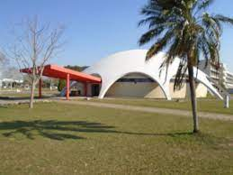
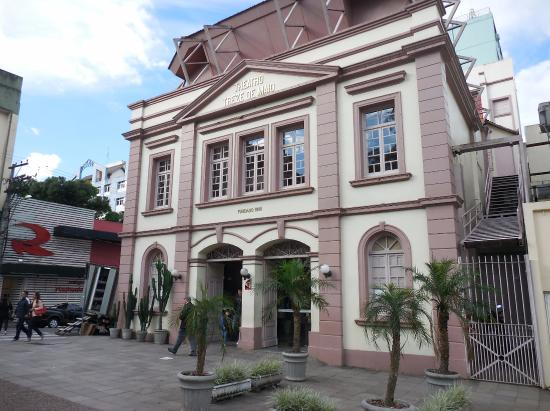
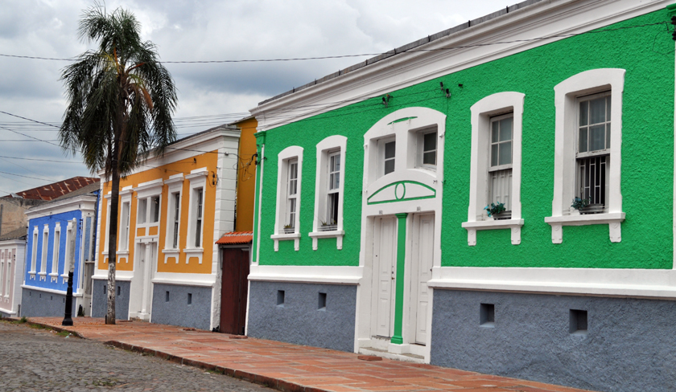
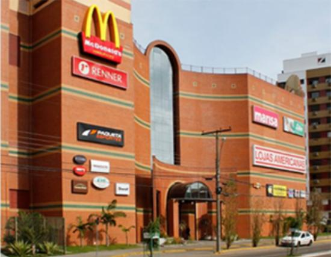

Lugares
Lugares
Entre os principais lugares, aqui terá uma prévia de alguns deles:
O Planetário, que está localizado na universidade federal de Santa maria, é o lugar perfeito para ver atrações científicas, dentre elas o que leva o destaque são os quatro filmes que são exibidos lá: Da Terra ao Universo, Estrela dos Faraós, Dois Pedacinhos de Vidro, O Mundo Virtual de Arthur e Maravilhas do Universo.
Na Praça Saldanha Marinho, encontra-se o Theatro Treze de Maio, um prédio histórico com uma arquitetura de natureza neoclássica, onde acontecem diversas apresentações teatrais, de dança, de música, recitais, entre outros.
Sendo uma das principais construções históricas, a Vila Belga, que inicialmente sua função era para servir de abrigo para os funcionários da empresa belga, que explorava a estrada de ferro na época, sendo Com seu estilo de arquitetura eclética das 84 casas, cada casa tem cor sua própria cor, as fachadas são decoradas com elementos Art Nouveau, assim Santa Maria tem uma marca da “Belle Époque” francesa.
>O shopping mais popular do centro é o Royal Plaza Shopping, é um lugar que possui três andares,e por isso possui uma variedade de lojas e restaurantes, oferecendo assim, ótimas oportunidades de compras, lazer e entretenimento, tendo um cinema 3D, praça de alimentação com internet wirelees, play ground e serviços.